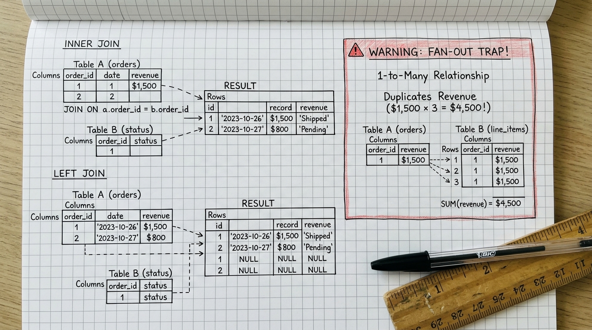

Từ Data Pipeline đến Business Insight. Tôi không chỉ xây dựng hạ tầng — tôi đi tìm câu trả lời cho những bài toán thực tế.
Tôi là Trần Đức (Dustin) — Thủ khoa UFM, từng xây pipeline thực tế, triển khai ERP cho doanh nghiệp, và đang quản lý hạ tầng IT trong môi trường CAND. Càng tiếp xúc nhiều data, tôi càng bị thu hút bởi những câu chuyện phía sau nó. Và đó là lý do tôi chọn trở thành Analytics Engineer.
Tại Sao Lại Là Analytics Engineer?
Tôi không chọn Analytics Engineer vì nó đang trending. Tôi chọn vì hành trình của tôi — từ xây pipeline, triển khai ERP, đến quản trị hạ tầng CAND — đã tự nhiên hội tụ vào đúng giao điểm này: người vừa build được hệ thống, vừa hiểu được bài toán kinh doanh.
Nền Tảng Quản Trị
- Thủ khoa Tin học quản lý UFM — nền tảng cho tôi tư duy rằng công nghệ sinh ra để phụng sự kinh doanh, không phải ngược lại.
- Hiểu tường tận bức tranh vận hành doanh nghiệp: Mua hàng, Kho bãi, Kế toán và Dòng tiền.
- Nắm bắt chính xác điều mà C-Level và các trưởng bộ phận thực sự quan tâm để ra quyết định.
The Analytics Engineer
- Tự chủ toàn diện: Chính tôi prepare mọi thứ nên tôi hiểu business domain sâu hơn — không còn cảnh DA chờ DE, DE không hiểu DA cần gì.
- Triệt tiêu độ trễ: Tự tay dựng luồng dữ liệu sạch ➔ tự mình giải quyết các câu hỏi Ad-hoc sống còn tức thì cho ban giám đốc.
- Dữ liệu sẵn sàng cho AI: Áp dụng chuẩn mực dbt, Semantic Layer và Data Modeling (Kimball Star Schema) vững chắc.
Kỹ Thuật & Hạ Tầng
- Tự tay thiết kế và dựng các Data Pipeline, làm chủ SQL ở cấp độ Advanced.
- Quản trị hạ tầng mạng LAN, hệ điều hành Linux (Ubuntu) và máy chủ vật lý.
- Tư duy "Mission-Critical": Bảo mật khắt khe, tính sẵn sàng 24/7 từ hệ thống dân cư & báo cháy GTEL.
5 Chương Định Hình Năng Lực Thực Chiến
Mỗi trải nghiệm không phải là một lát cắt ngẫu nhiên, mà là từng mắt xích nối tiếp nhau tạo nên một kỹ sư có gốc rễ hạ tầng và tư duy kinh doanh nhạy bén.
Thủ Khoa Đầu Ra — Đại Học Tài Chính - Marketing (UFM)
Tôi chọn ngành Hệ thống thông tin quản lý — chuyên ngành Tin học quản lý tại UFM. Không phải ngẫu nhiên. Tôi muốn hiểu cách công nghệ thông tin phục vụ bài toán kinh doanh thực tế, chứ không chỉ viết code trong phòng lab. Khi tốt nghiệp với danh hiệu Thủ khoa (GPA 3.7/4.0), tôi biết nền tảng này sẽ theo mình rất lâu.
Dấn Thân Làm Data Engineer & Bứt Phá Chứng Chỉ SQL Advanced
Ra trường, tôi dấn thân ngay vào vị trí Data Engineer. Đây là nơi tôi lần đầu chạm vào data thực tế — không còn là bài tập mẫu, mà là hàng triệu dòng dữ liệu cần được "nắn" thành pipeline, đối soát và biến thành báo cáo có ý nghĩa. Sau đó, tôi nghỉ việc để tập trung cày chứng chỉ SQL Advanced — vì tôi hiểu rằng SQL là xương sống, và muốn thành thạo nó ở mức cao nhất.
Triển Khai ERP — Thấu Hiểu Bức Tranh Vận Hành Toàn Diện
Bước sang vai trò triển khai ERP, tôi được ngồi cùng các chủ doanh nghiệp, giám đốc tài chính và trưởng phòng ban. Đây là lúc tôi nhìn thấy bức tranh toàn cảnh: một con số trên báo cáo thực chất là kết quả của chuỗi liên hoàn từ đặt hàng ➔ nhập kho ➔ đối soát công nợ ➔ hạch toán sổ cái. Kinh nghiệm này cho tôi hiểu stakeholder thực sự quan tâm điều gì và biết cách dịch business requirements thành dữ liệu.
Trực Chiến Hạ Tầng & Hệ Thống Thông Tin Trọng Yếu CAND
Khi nhận lệnh nghĩa vụ Công an nhân dân, tôi nghĩ hành trình data của mình sẽ phải tạm dừng. Nhưng may mắn, tôi được trưng dụng làm IT Support — được tiếp xúc với data rất nhiều, kể cả hạ tầng mạng, máy chủ, hệ thống quản lý dân cư và truyền tin báo cháy GTEL. Nghĩa vụ tưởng là gián đoạn, hóa ra là bước ngoặt cho tôi hiểu thêm chiều sâu về hạ tầng — thứ mà một Data Engineer thuần túy ít khi có cơ hội chạm tới.
Bước Ngoặt Định Vị: Trở Thành Analytics Engineer Toàn Năng
Càng tiếp xúc nhiều data, tôi càng quan tâm hơn về câu chuyện phía sau nó. Tôi bắt đầu tìm hiểu về ad-hoc — những bài toán phía sau bức tranh doanh nghiệp, thứ mà CEO cần để ra quyết định. Trong thời đại AI, ranh giới giữa Data Analyst và Data Engineer đang dần mờ đi. Analytics Engineer ra đời chính là để giải quyết điều này: tôi tự build pipeline cho riêng mình, tự prepare data, và vì chính tôi là người chuẩn bị mọi thứ — tôi hiểu business domain sâu hơn bất kỳ ai.
Hạ Tầng Vững Vàng, Truy Vấn Sâu Sắc
Đây là những công cụ tôi dùng hàng ngày — không phải vì trending, mà vì mỗi thứ đều gắn với một kinh nghiệm thực tế cụ thể trong hành trình của tôi.
Hạ Tầng & Hệ Điều Hành
Tôi luyện từ môi trường trực chiến CAND
Đường Ống & Lưu Trữ
Kinh nghiệm thực chiến Data Engineer
Analytics Engineering
Vũ khí giải quyết bài toán kinh doanh
Tri Thức Thực Chiến: SQL Field Notes
Tôi tin rằng cách tốt nhất để chứng minh năng lực là qua sản phẩm thực tế. Dưới đây là chuỗi bài viết tôi tự tay biên soạn — mỗi bài đều đúc kết từ những lỗi tôi từng mắc, những bẫy tôi từng rơi vào khi làm việc thực tế với SQL.

Tư Duy SQL Từ Gốc: Thứ Tự Thực Thi & Bẫy Lọc Dữ Liệu
Cách Query Engine xử lý từ FROM tới LIMIT, giải phẫu vì sao không lọc alias ở WHERE và bẫy Three-Valued Logic với NULL.

Chinh Phục SQL JOINs: Hóa Giải Bẫy Nhân Đôi Fan-Out Trap
Nguyên nhân khiến doanh thu bị đội lên gấp 3 lần khi JOIN 1-Nhiều và 3 kỹ thuật thực chiến dập tắt Fan-out triệt để.

Common Table Expressions (CTE): Nghệ Thuật Modular SQL
Xóa bỏ Spaghetti Subqueries, thiết kế đường ống 4 tầng chuẩn mực dbt, phân tích RFM và kỹ thuật Recursive CTE phân cấp.

Bậc Thầy SQL Window Functions: Chuỗi Thời Gian & Deduplication
Phân biệt ROW_NUMBER vs RANK vs DENSE_RANK, khử trùng bản ghi mới nhất, tính MoM/YoY bằng LAG/LEAD và Running Total.
Sẵn Sàng Cho Những Bài Toán Dữ Liệu Thách Thức Nhất
Hiện tại, tôi đang hoàn thành trách nhiệm nghĩa vụ trong môi trường CAND và không ngừng mài sắc kỹ năng mỗi ngày. Mục tiêu 2027 của tôi: trở thành Analytics Engineer có thể tự build toàn bộ data stack — từ pipeline đến dashboard đến ad-hoc insight — cho doanh nghiệp. Nếu bạn đang tìm kiếm một người thực chiến, kỷ luật và thấu hiểu vận hành, tôi sẵn sàng kết nối.
✉️ Gửi email hợp tác: trandc3015@gmail.comGửi Lời Nhắn Trực Tiếp Cho Dustin
Bạn muốn trao đổi cơ hội tuyển dụng, hỏi thăm kỹ thuật hay đơn giản là kết nối? Thông điệp sẽ được gửi thẳng về hòm thư cá nhân của tôi.